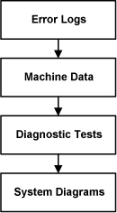
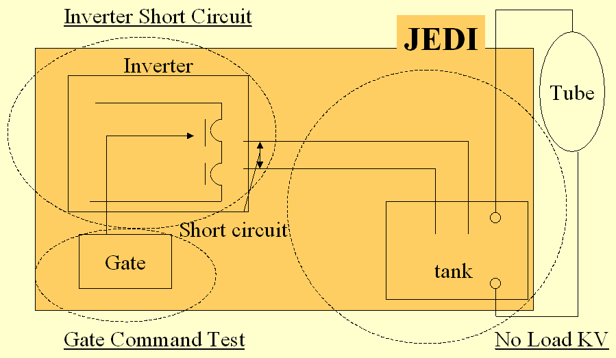

Operating Documentation
Direction 5307452-8EN, Rev# 4
Discovery CT750 HD Service Methods - Adv
Operating Documentation |
| Last Revised: | 01 August 2008 |
The X-Ray generation subsystem has the capability to give detailed error messages when problems occur. As such, examining the error logs (such as the gesyslog) is the first step in troubleshooting. Comparing real-time data, or machine data, acquired during scanning to normal operating range is the next step. Use the Real-Time Stats viewer for looking at raw machine data. Finally, using the X-Ray generation diagnostic tools can be used as the last resort in troubleshooting for complicated problems. Below is a simple diagram of the troubleshooting process.
Illustration 1: Troubleshooting Process

References:
Documentation for the Common Service Desktop, which includes information on the error log and Real Time Stats viewers as well as diagnostic tools.
The X-Ray generation subsystem provides three major FRU isolation diagnostics for troubleshooting complex kV issues. Each test is separate and unique, however, using one or more of the tests allows for much better FRU isolation. See Illustration 2 for a graphic showing the test / FRU isolation relationship.
Below are the three manual diagnostic tests. Familiarization with each is important for safety purposes.
This sequence isolates each major FRU in the subsystem.
Illustration 2: kV Diagnostics for JEDI

In this test, the IGBT’s gate drive supply and the IGBT’s gate drive is verified. At the same time, verification is made that no inverter currents nor high voltage are measured. This test is performed without DC voltage applied to the inverter so that no X-ray is generated. Anode rotation and filament drive are not activated during this test. For further information, see Inverter Gate Command Test.
In this test, the inverter is commanded at a fixed frequency and is loaded with a short circuit. Verification is made that inverter currents are correctly set. At the same time verification is made that no high voltage is measured. This test is performed without connecting the high voltage tank to the inverter so that no X-ray is generated. Anode rotation and filament drive are not activated during this test. For further information, see Shorted Inverter Test.
In this test an exposure is taken as in application mode except that no filament drive nor anode rotation is running. Verification is made that the inverter currents are correctly set and that kV regulation is operating properly. As no filament drive is applied, no x-rays are generated. For further information, see No Load kV Test.
For mA function troubleshooting there is a Heater Diagnostic test that can be run to test the functionality of the heater board inside the auxiliary box. Other troubleshooting procedures can be Meter Verification and Filament Calibration. Filament calibration is useful when it appears like the system is working but cannot properly control the scan parameters (scan parameters run out of range).
For further information, see Heater Diagnostic Test.
For X-Ray tube anode rotation troubleshooting there is a Rotor Diagnostic test that can be run to test the functionality of the rotation board inside the auxiliary box.
For further information, see Rotor Diagnostic Test.
There is a Fans Diagnostic tool that will run the inverter assembly fans on command.
For further information, see JEDI Fans Diagnostics.